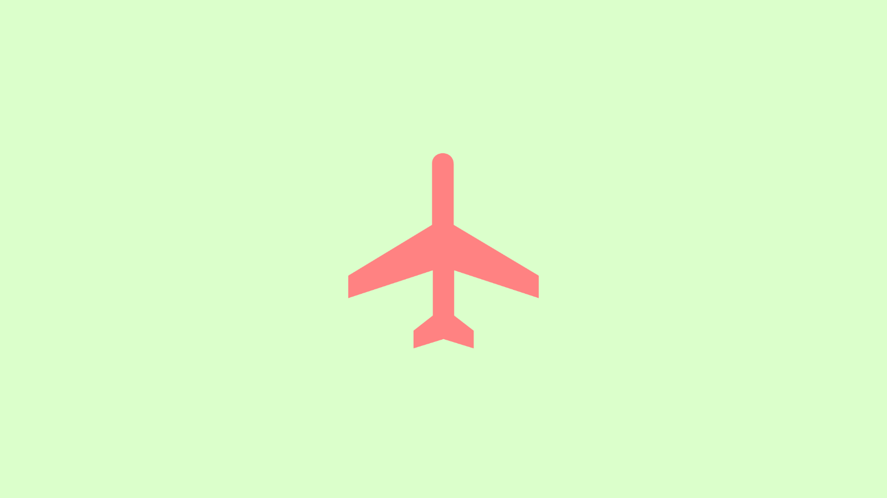
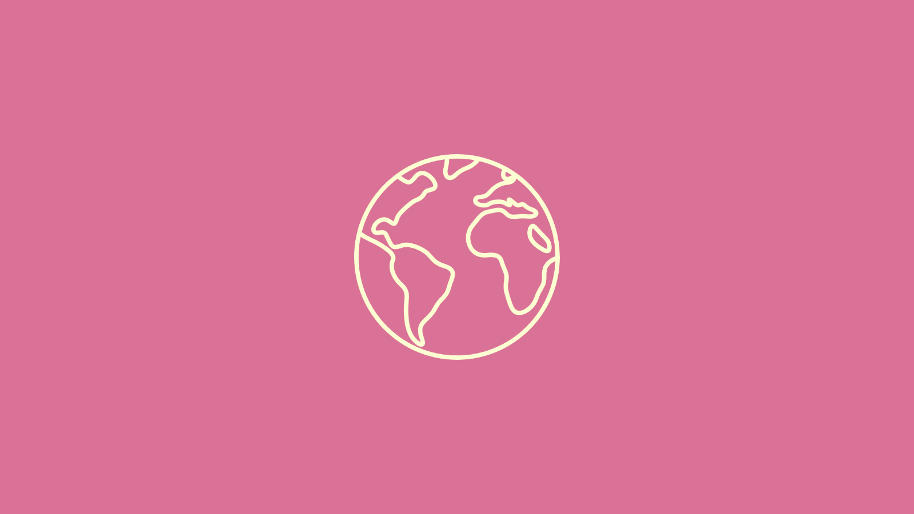
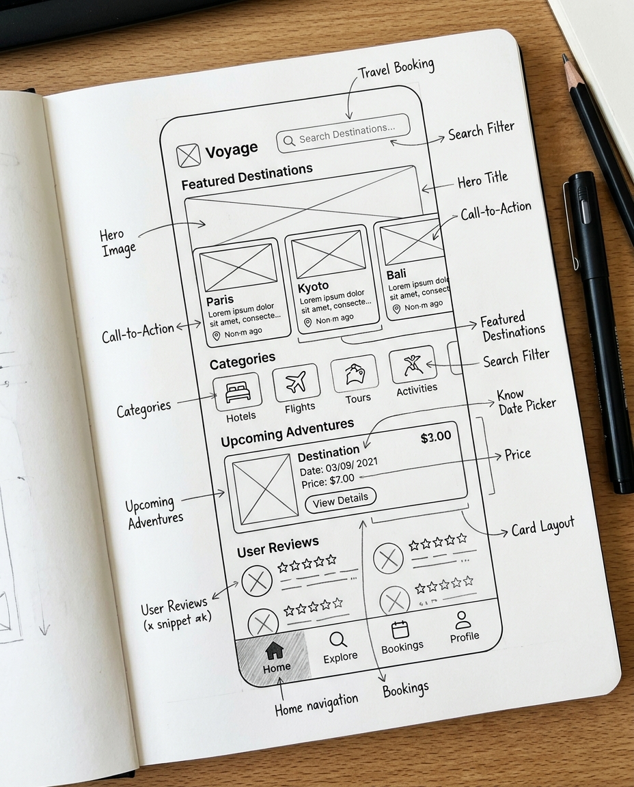

Criando experiências digitais com clareza e acessibilidade
Transformo complexidades em interfaces intuitivas e memoráveis através de metodologias centradas
PROJETOS
Clique em qualquer card para explorar os detalhes completos, links e ferramentas utilizadas

PRISMA
Questionário que auxilia os usuários a escolherem o seu próximo destino de viagem de forma personalizada

ATMOS
Página web informativa e educativa criada para consciencializar o público sobre as alterações climáticas

Unindo sensibilidade estética com rigor técnico e estratégico.
Sou estudante de Desenvolvimento de Software Multiplataforma, com foco em UX/UI Design e Análise de Dados. Tenho interesse em criar soluções digitais que aliem funcionalidade, usabilidade e estética, considerando as necessidades dos usuários e os objetivos de cada projeto.
Durante a graduação, busco aplicar na prática os conceitos de experiência do usuário, design de interfaces e desenvolvimento web, explorando também o uso de dados para apoiar decisões e aprimorar soluções.
Formação & Certificações
Tecnologia em Desenvolvimento de Software Multiplataforma
Fatec Diadema - Luigi Papaiz
Com foco em UX/UI Design, Front-end e Dados
Cursos Complementares para minha formação
Orango Senac
Design Responsivo, UX Criativo e Design Thinking
Onde me encontrar
Entre em contato comigo para conversarmos sobre oportunidades, projetos e parcerias.